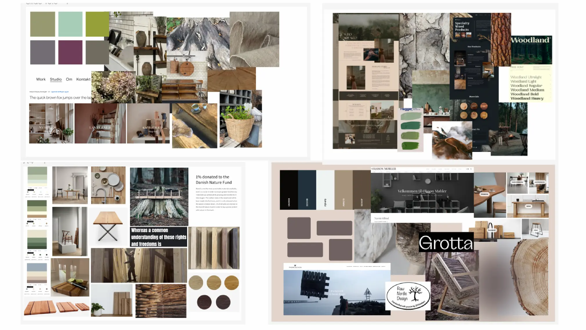

Redesign
Gennem længere research fandt min studiegruppe og jeg frem til Raw Nordic Design som er ejet af Birgitte. De næste 2,5 uge af forløbet blev dermed brugt på at producerer nyt indhold til Raw Nordic Designs hjemmeside, som vi redesignede.
Her kunne vi trække på relevante kompetencer og færdigheder fra tidligere forløb. Vi fik derfor lavet moodboard og styletile for at danne os til overblik over hvilken stil vi skulle gå med.
Moodboard
Styletile
Wireframe til forside
Digital prototype til forside

Indhold
Det mest relevante indhold på sitet er Birgittes produkter. De skal tydeliggøres og skal invitere brugeren til at klikke ind på dem og købe dem. Derfor var vi ude på Birgittes værksted og skyde nogle billeder af hendes produkter og hendes arbejdsproces. Derudover skød vi en masse videoklip, der skulle klippes sammen til en stemningsvideo på forsiden. Videoen illustrerer processen fra det fundne materiale til det færdige produkt.
Her er forskellige billeder fra sitet


Test
I dette tema var det også vigtigt at udvikle på sitet. Dette blev gjort med de forskellige test som hjælper med at kunne udvikle de steder hvor brugeren ikke har en naturlig tilgang til de løsninger vi selv har fundet.
5 sec testen har blandt andet givet anledning til at gennemskue hvor der kunne laves nye løsninger.
Nuværende site
-
“Jeg tænker, at jeg kan købe stenfigurer og måske lave dem selv”.
-
"Meget rodet og forvirrende."
-
"Forstår ikke formålet med sitet."
Redesignede løsning
-
“Det bliver hurtigt klart, at virksomheden er dedikeret til bæredygtighed og har fokus på at være miljøvenlig. Siden er behagelig for øjet, og navigationen rundt på forskellige sider er enkel og overskuelig.”
-
“Hjemmesiden sælger naturmøbler, kvalitet og gode materialer.”
-
“Hjemmesiden viser møbler og materialer, som skal sælges.”
Forside på nuværende site